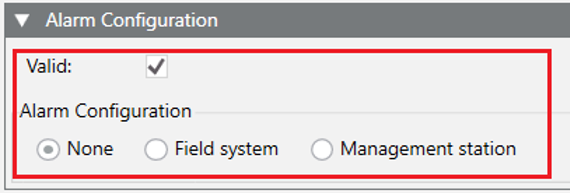

None — No Alarm Configuration
To define no alarm configuration, the following can be specified:
Data | Use | Setting |
Type | Mandatory | NONE |
Example
"Alarms": {
"Valid": true,
"AlarmsConfiguration": { "Type": "NONE" }
}
In case of a re-import, this definition can be used to remove an existing alarm configuration.
The following image shows the corresponding settings in the Models & Functions tab:
